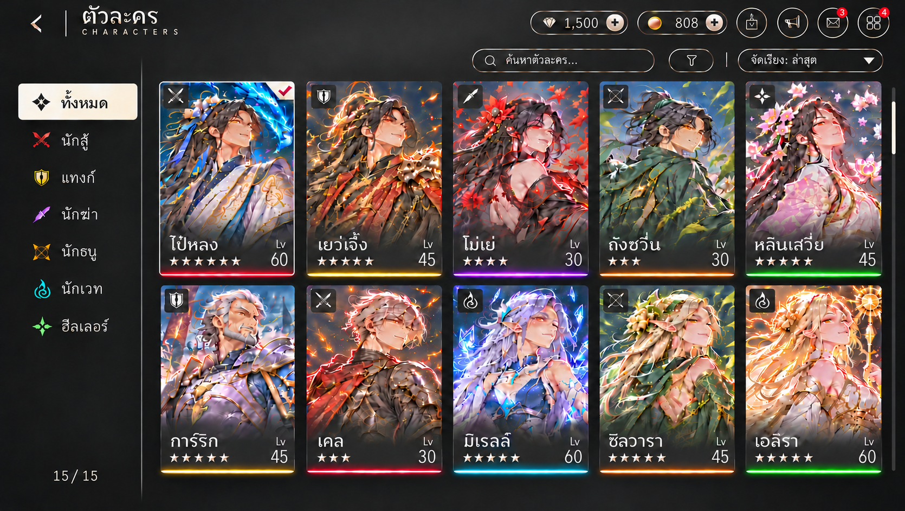
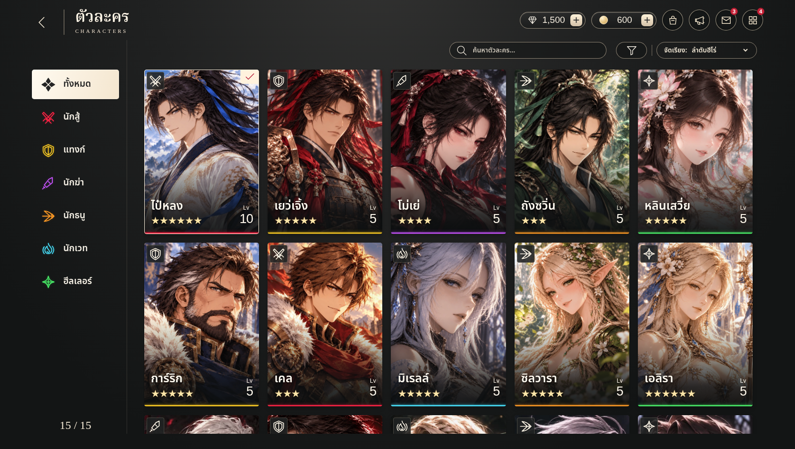

ภาพซ้ายคือแบบที่ผู้ใช้เลือก ภาพขวาถ่ายจากเกมจริงที่ 1670×942 การ์ดจริงเล็กกว่าแบบเล็กน้อยตามคำขอให้เว้นระยะและไม่ดูซูม ใช้รูปฮีโร่เดิมและข้อมูลในเซฟทดสอบแยก ไม่เปลี่ยนอาร์ตหรือค่าพลังเพื่อเลียนภาพคอนเซปต์


ความต่างที่คงไว้: รูปต้นฉบับฮีโร่ของเกมต่างจากภาพวาดในดราฟ, ใช้ฟอนต์และไอคอนเวกเตอร์จริงแทนตัวอักษรที่วาดในคอนเซปต์, เลเวล/ดาว/เงินมาจากเซฟจริง ตัวเลขในภาพนี้เป็นเซฟ QA ที่แยกจากผู้เล่น ไม่ได้เพิ่มให้เซฟผู้เล่น
สถานะ: รอผู้ใช้ตรวจภาพจริง · Desktop เท่านั้น · ยังไม่ merge/deploy